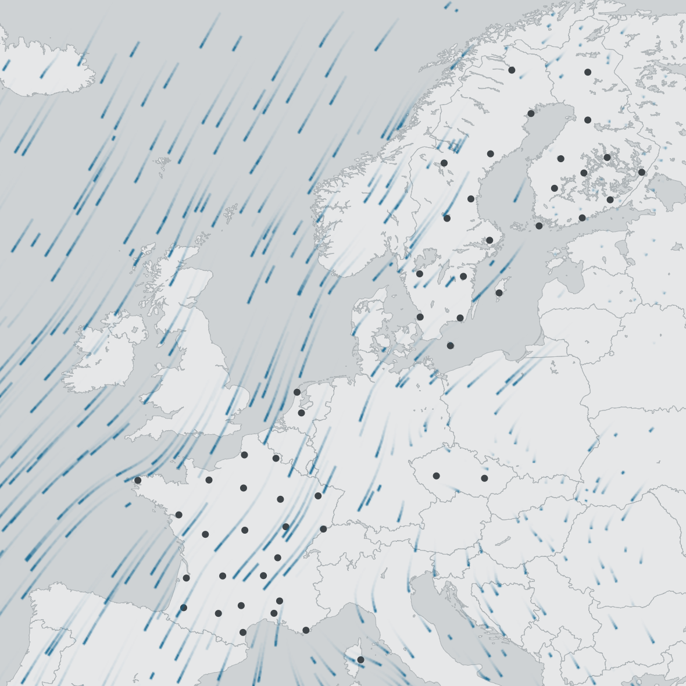

Vertical profile (vp) data processing for analyses and visualizations
Peter Desmet
2017-06-19
Preface
This document describes how we process vertical profile (vp) data1 for further analysis and visualizations such as bird migration flow visualization and TIMAMP.

First attempt at visualizing the Western flyway with the bird migration flow visualization.